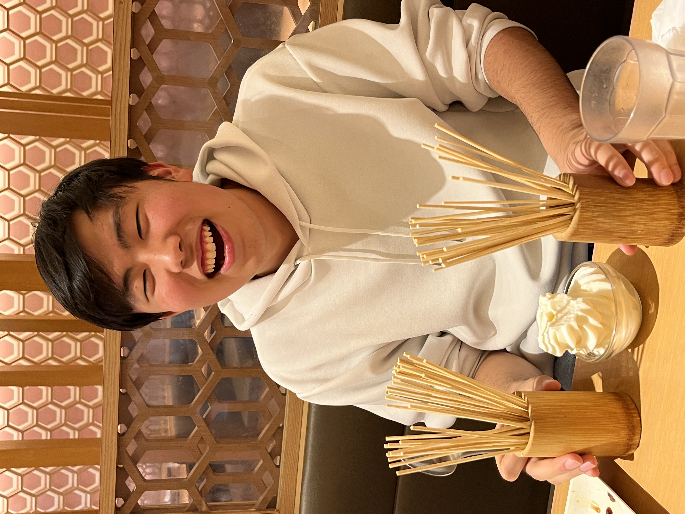

Information Systems Engineering Student
Hello! I'm Keigo Takeda, a student studying Information Systems Engineering. I enjoy manga, anime, music, and creative activities. Recently, I’ve been watching Fullmetal Alchemist and reading Souboutei Kowasu Beshi. Through this class, I hope to deepen my understanding of maps and spatial information.
A fascinating website that shows the actual size differences between countries.
A useful tool for creating and organizing card decks.